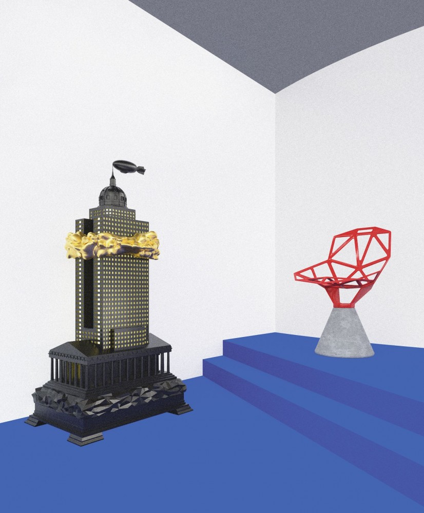

Basic Instincts
30 OBJECTS: A SURVEY SHOW TO DEFINE DESIGN IN THE FIRST TWO DECADES OF THE 21ST CENTURY

The first two decades of the 21st century coursed with contradictions and concerns, bookended by the fever dream of the Y2K scare and the reality of the COVID-19 global pandemic. Reviewing this complex era, curators Felix Burrichter and Camille Okhio have created a virtual exhibition, selecting 30 objects that sketch out a broad outline of the past 20 years, through the lens of PIN–UP.
The late 1990s and early 2000s were dominated by Dutch design, finding support from key retailers like Murray Moss. Design companies like Droog, and designers like Marcel Wanders, Jurgen Bey, Hella Jongerius, Wieki Somers, and later Maarten Baas, propagated a style that was cheeky, lurid, and pragmatic all at once, using simple, utilitarian materials and punning references to create furniture of maximum effect. Studio Job’s work from the early to late 2000s represents both a continuation of this style and its complete antithesis. The pop-cultural and historic references are still there, but they’re executed by highly skilled artisans in Studio Job’s ateliers, using only the most precious woods, metals, and stones, and making ample use of gold. Sculptural work like the Robber Baron series, released only a year before the global financial crash, also paralleled the rise of the burgeoning collectible-design market. — Felix Burrichter